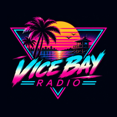

VICE BAY
RADIO
La radio d'une ville imaginaire. Tous nos liens.
Écouter Vice Bay Radio6 stations FM, en direct, toute la nuitEN DIRECT VICE BREAKLe jeu · sortie le 19 novembreBIENTÔT KotobaUn mot du jour, en 6 languesDISPONIBLE VoteDayVote avec tes amis, tranche toutDISPONIBLE GTA VI : le compte à reboursHeure de sortie dans ton pays, actus 2 fois par jourEN LIGNE Le DiscordBugs, idées, coulisses de la baieREJOINDRE OKALAM StudioLe studio derrière tout çaEN LIGNE Instagram@vicebayradioSUIS-NOUS